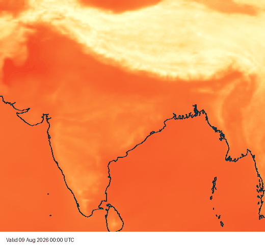

Model fields retain their highest available native time step; endpoint products are also reduced to a common India grid.
India multi-model forecast
Weather forecasts and model comparisons
Five-day city forecasts, India-region maps, and matched validation against observations.
Loading…
Five-day outlook
Delhi
Selected day in detail
Weather through the day
Temperature snapshots and rainfall over each exact native model interval. The combined view uses exact six-hour periods without temporal interpolation.
Inputs behind the city forecast
Contributing forecast grids
Select a forecast date above and a model below to inspect its loaded grid cells, values, weights, and exact validity times.
Exact native forecast times used
Forecast maps
India field explorer
Compare the recent-error blend, the simple grid-cell average, or any source model.
Loading map…
Temperature (°C) · fixed scale
0153045
Same 0–45 °C scale for every model, valid time, and temperature layer.Forecast evolution
Temperature · Combined · recent-error blend
Animated forecasts valid at 09 Aug 2026, 05:30 IST · 11 Aug 2026, 05:30 IST · 13 Aug 2026, 05:30 IST on a fixed 0–45 °C scale.

Highest available cadence
Native-time forecast maps
Inspect every available model step for the latest three initializations. For rainfall, IMERG Early and Late are accumulated over the identical forecast interval whenever observations exist.
Hover a map for its nearest native-grid value.
Open-Meteo observations
Forecast validation
Forecasts and observations are matched at the same city and valid time. Rainfall uses the same accumulation window.
Mean absolute error against Open-Meteo by forecast horizon. Click model names to add or remove traces; hover or focus a point for its exact score.
Open static forecast-versus-observation diagnostic

One initialization at matched valid times
Compare each forecast directly with its observation at the displayed dates and times.
NASA GPM IMERG V07
Observed rainfall maps
Early and Late Run precipitation at the native 0.1° grid. Choose every native 30-minute interval or exact UTC-aligned six-hour accumulation from the rolling six-day window.
Hover a map for its nearest native-grid rainfall value.
Common-grid six-hour validation
Forecast precipitation against IMERG
All traces use identical six-hour accumulations and the same 0.25° cell. Select any combination of models; deselected controls are greyed out.
Drag across the plot to zoom
Forecasts versus conservatively matched IMERG Early and Late rainfall. Click model names to add or remove traces; hover or focus a point for its exact UTC and IST interval. Drag across an empty part of the plot to zoom; double-click or use Reset view to restore the full range.
About the data
Method and sources
The site updates from the newest available 00 UTC initialization. Late models are added when they become available.
A causal search chooses equal weighting or recent-window exponential weighting separately for each variable and valid timestamp.
Open-Meteo provides temperature validation. IMERG Early and Late rainfall are summed from exact half-hours matching each forecast interval.
| Model | Source | Members used | Reference |
|---|---|---|---|
| WeatherNext 2 / FGN | Google WeatherNext | 8 / 64 members | Documentation |
| GFS | dynamical.org / NOAA | Deterministic | Documentation |
| GEFS | dynamical.org / NOAA | 31 / 31 members | Documentation |
| AIFS | dynamical.org / ECMWF | Deterministic | Documentation |
| IFS-ENS | dynamical.org / ECMWF | 51 / 51 members | Documentation |
The simple-average map takes the arithmetic mean of all available source-model values independently at each grid cell. The endpoint recent-error blend pools errors across the four validation cities. The six-hour IMERG-calibrated combination instead conservatively matches IMERG to the 0.25° forecast grid, learns shrunken cell-and-lead bias fields, and combines corrected models from prior realized errors. Its retrospective guardrail uses a convex blend only where matched historical MSE is no worse than the best corrected source; elsewhere it selects that historical leader. This does not guarantee future performance. IMERG Early and Late data are read from dynamical.org at native 30-minute, 0.1° resolution. Forecast rainfall is compared only to complete IMERG half-hours that exactly tile its interval. Decoded map payloads are retained in the browser for the session, while source downloads remain in the workstation cache. This is a research product, not an official forecast or warning.